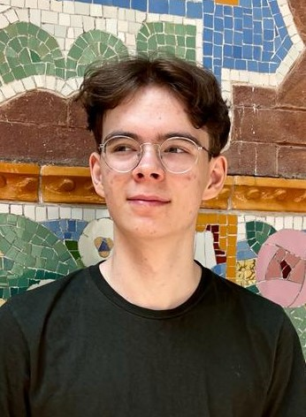

Asbjørn Henrik Schmidt-Hansen
Om mig:
Jeg er en frisk teenager på 18 år med et godt hoved. Jeg er i gang med EUX
Data og kommunikation og bliver færdig med grundforløb 2 til sommer. Jeg
forventer at vælge speciale i programmering.
Jeg har 5 måneders erhvervserfaring som butiksassistent, hvor jeg arbejdede
inden jeg startede på EUX. Jeg er derfor service-minded og kan lide at løse
problemer.
Det er jeg god til:

- Jeg er god til at koncentrere mig og lytte
- Jeg er god til hovedregning
- Jeg er god til at omstille mig
- Jeg er god til at samarbejde med andre
- Jeg har en høj arbejdsdisciplin
- Jeg er velopdragen og overholder aftaler
Uddannelse:
- EUX grundforløb 1, Frederiksberg - 11,3 i karaktergennemsnit (2023)
- EUX grundforløb 2, Ballerup - 11 i karaktergennemsnit (2022)
- Folkeskole, Usserødskole, Hørsholm - 9. klasse afgangseksamen (2021)
Erhvervserfaring:
- Butiksassistent 27,5 timer om ugen i Normal, Hørsholm Midtpunkt (17. januar 2022 – 4. juni 2022)
- Praktikforløb ved Afdelingen for IT på DTU, Kgs. Lyngby, uge 42-43 i 2022
Sprog:
- Dansk: Flydende (Modersmål)
- Engelsk: Højt niveau
IT-Kompetencer:
Jeg har arbejdet meget i Microsoft pakken, Visual Studio, Oracle VirtualBox og
Cisco Packet Tracet. Jeg har prøvet at programmere i C#, HTML og Python.